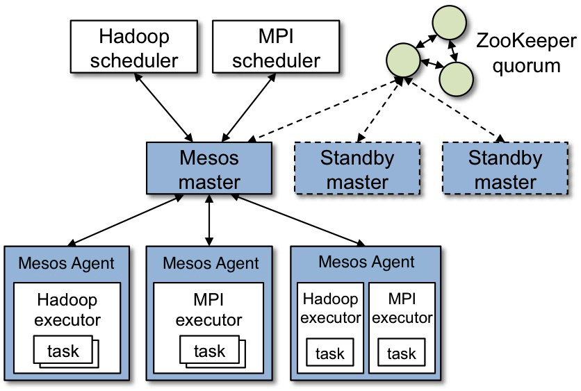
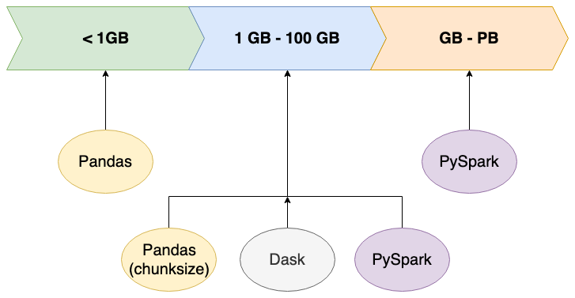

分布式大数据处理
MapReduce
Map操作将运算依次作用到序列的每个元素，并把运算结果作为新的序列返回。
Reduce操作把运算依次作用在序列元素上进行聚合运算。

Python内建了map()、filter()和reduce()函数。
maped_set = map(fcn, dataset) # 等价于 list=[fcn(x) for x in dataset]
tf = filter(lambda x: cond(x), list) # tf=[cond(x) for x in list]
list = list(tf) # list=[x for x in list if cond(x)]
from functools import reduce
result = reduce(lambda x,y: x+y, dataset)
Hadoop Framework
The Apache Hadoop software library is a framework that allows for the distributed processing of large data sets across clusters of computers using simple programming models.
Hadoop包括分布式文件系统HDFS和计算框架Hadoop Yarn。

Hadoop的部署模式为主从模式，包括：
-
Master Node of HDFS：
- NameNode manages the distributed file system and knows where are stored data blocks.
-
Master Node of Yarn:
- 资源管理器（ResourceManager） manages the YARN jobs and takes care of scheduling and executing processes on worker nodes. 调度器（Scheduler）是资源管理器的组成部分，allocating resources to applications based on the resource requirements of applications, subject to constraints of capacities, queues etc.
-
Worker Nodes: store the actual data and provide processing power to run the jobs.
- DataNode manages the physical data stored on the node;
- NodeManager：负责工作节点上运行任务（Container）的资源管理，并与ResourceManager交互。
- Container: the abstract notion of resources, including memory, CPU, disk, network etc.


App Mstr：ApplicationMaster，即应用主节点，是应用运行的主要容器，负责管理同一应用的其他容器并与调度器交互。Yarn的部署方式也是主从方式，但无需与HDFS的主从节点重合。
HDFS daemons are NameNode, SecondaryNameNode, and DataNode. YARN daemons are ResourceManager, NodeManager, and WebAppProxy.
部署
下载安装
从镜像站点下载hadoop-x.y.z.tar.gz并解压缩到目标文件夹。
版本：CDH 6 Version, Packaging, and Download Information | 6.x | Cloudera Documentation。
设置运行环境
如果同时使用Hive则需要使用Java 8。
Apache Hadoop 3.3 and upper supports Java 8 and Java 11 (runtime only). Apache Hadoop from 3.0.x to 3.2.x now supports only Java 8. Apache Hadoop from 2.7.x to 2.10.x support both Java 7 and 8.
用户环境变量
# edit /home/<user>/.bashrc
# JAVA_HOME set to the root of your Java installation:
# update-alternatives --display java
export JAVA_HOME=/usr/lib/jvm/java-11-openjdk-amd64
export HADOOP_HOME=/usr/local/hadoop
export PATH=${PATH}:${HADOOP_HOME}/bin:${HADOOP_HOME}/sbin
通过Hadoop环境配置文件etc/hadoop/hadoop-env.sh设置JAVA_HOME，不影响全局Java环境配置。
Single Node
Pseudo-Distributed Operation
-
配置
etc/hadoop/core-site.xml和etc/hadoop/hdfs-site.xml（参考集群配置）。 -
设置本地SSH免密登录
ssh-copy-id -i ~/.ssh/id_rsa.pub $hostname -
格式化HDFS文件系统，由
dfs.namenode.name.dir指定，默认位置root=/tmp/hadoop-gary/dfs/name：hdfs namenode -format不同版本的HDFS文件系统不兼容。
-
启动Name Node和Data Node守护进程：
start-dfs.sh（关闭stop-dfs.sh） -
执行MapReduce任务
YARN on a Single Node
- 在上述步骤基础上，配置
etc/hadoop/mapred-site.xml和etc/hadoop/yarn-site.xml（参考Cluster配置）。 - 启动守护进程：
start-yarn.sh（停止：stop-yarn.sh）
Cluster
Typically one machine in the cluster is designated as the NameNode and another machine as the ResourceManager, exclusively.
The rest of the machines (workers) in the cluster act as both DataNode and NodeManager.
If MapReduce is to be used, then the MapReduce Job History Server will also be running.
For large installations, these are generally running on separate hosts.
如果使用虚拟机进行实验，可先将多数内容在单节点上创建完成，然后复制虚拟机。
-
编辑
/etc/hosts，配置集群所有节点的域名映射。 -
配置主节点（Name Node和Resource Manager）到从节点的SSH连接，实现[免密登录](../Linux and UNIX/Linux配置和管理#通过SSH访问服务器)，从而从主节点完成所有节点的配置（设置SSH服务的
PermitUserEnvironment从而保证远程连接能够使用环境变量）。 -
配置
etc/hadoop/core-site.xml，etc/hadoop/hdfs-site.xml，etc/hadoop/mapred-site.xml和etc/hadoop/yarn-site.xml（包括Yarn的资源分配）。如没有配置
hadoop.tmp.dir参数，系统使用默认的临时目录：/tmp/hadoo-hadoop。而这个目录在每次重启后都会被删除，必须重新执行format才行，否则会出错。 -
创建文件读写目录。配置文件中设置的相关目录，需要运行
hadoop的用户或其所属组具有写权限（使用chmod或chown修改相应权限）；否则应将相关目录设置到有权限的目录下。hadoop-master: ERROR: Cannot set priority of secondarynamenode process 3001.
-
编辑
etc/hadoop/workers（Hadoop2.x为slave），配置工作节点（主机名）； -
配置内存分配规则（小内存节点需要）；
-
将配置文件分发到各个节点：
for node in nodes; do scp -r etc/hadoop/* $node:hadoop_home/etc/hadoop/; done注意将配置文件的权限应该包括
scp用户的可写权限。 -
在NameNode节点上执行格式化HDFS文件系统
完成格式化后显示
SHUTDOWN_MSG: Shutting down NameNode at hadoop-master/192.168.3.110。输出日志中记载了文件系统的配置信息（包括磁盘路径）。 -
在
NameNode上启动HDFS：start-dfs.sh（停止：stop-dfs.sh） -
在作为
ResourceManager上启动Yarn：start-yarn.sh（停止：stop-yarn.sh）在非
ResourceManager的节点上（根据配置文件声明）启动Yarn会导致ResourceManager启动失败并触发BindException。因为启动脚本会监听域名/主机名对应的IP和端口，其并非当前主机的IP地址，所以导致上述异常。 -
执行MapReduce任务。
https://hadoop.apache.org/docs/r3.3.0/hadoop-project-dist/hadoop-common/RackAwareness.html
网络拓扑
Hadoop可根据集群的网络拓扑优化数据读写。
在core-site.xml中指定拓扑声明文件：
net.topology.node.switch.mapping.impl=org.apache.hadoop.net.TableMapping
net.topology.table.file.name=$FILEPATH/network.mapping
拓扑声明文件可手动编写或通过脚本生成：
172.28.76.111 /rack-001
172.28.76.112 /rack-002
172.28.76.113 /rack-003
可能的问题
pdsh导致无法远程配置节点，卸载pdsh。- DataNode的路径配置不正确，导致节点不能启动，检查
hdfs-site.xml配置文件。
Hadoop命令行
shellcommand [SHELL_OPTIONS] [COMMAND] [GENERIC_OPTIONS] [COMMAND_OPTIONS]
shellcommand：例如hadoop, hdfs, yarn,...，
COMMAND是子命令，
GENERIC_OPTIONS是多类命令通用的选项，
-libjars xxx.jar,yyy.jar,...：提交任务时在CLASSPATH中添加额外jar包。
Apache Hadoop 3.3.1 – Hadoop Commands Guide
Hadoop命令
hadoop classpath [--glob | --jar <path> ]
hadoop jar <jar> [mainClass] args... # 使用yarn jar启动YARN applications.
HDFS命令
HDFS命令用于管理HDFS数据。HDFS默认目录为/user。
hdfs dfs -cmd [options] args # 等效命令：hadoop fs
hdfs dfs -help/-usage [cmd ...] # 查看命令的帮助信息/使用语法
多数命令cmd与Linux命令相同，包括ls、mkdir、rm等。
文件系统信息
hdfs fsck PATH # 检查文件系统状态
hdfs dfs -df -h [PATH ...] # 查看指定路径所在文件系统的名称、容量、使用量、可用量、使用比例
-du -s -h PATH ... # 查看指定类路径下个目录的使用容量
hdfs dfs -count -h PATH # 统计指定路径下目录、文件数量和数据量
格式化输出文件/目录的统计信息，格式化字符串中可包含普通字符和%替换指令：
hdfs dfs -stat FORMAT PATH # %n(name) %F(type) %u(user) %g(group) %b(filesize) %o(blocksize)
# %y(datetime) %Y(timestamp-ms) %r(replication)
设置文件的副本数量：
hadoop fs -setrep [-w] [-R] <numReplicas> <path> # => hdfs dfs
hadoop fs –setrep -w 3 hdfs:///some/path/spark-libs.jar
-w：等待操作完成。-R选项用于向后兼容，如果找不到命令可添加该选项。
文件管理
使用get命令导出数据到本地磁盘，使用put命令将本地磁盘的数据存入HDFS文件系统。
hdfs dfs -copyFromLocal|copyToLocal SRC DEST # 本地系统与DHFS间文件复制 => -get/-put
-moveFromLocal/moveToLocal SRC DEST
-appendToFile SRC ... DEST
hdfs dfs -cp/-mv -f SRC DEST # HDFS文件复制/移动
hdfs dfs -ls -h -R PATH
hdfs dfs -find PATH ... EXPRESSION ... # => linux find
hdfs dfs -rm -skipTrash FILE
hdfs dfs -mkdir/-rmdir /user/gary/packages # 创建/移除目录
hdfs dfs -test -[defsrwz] PATH_URL # 测试文件/目录信息(d:目录,e:存在,f:文件,s:非空,z:空文件)
hdfs dfs -touchz PATH # 创建空文件
权限管理
hdfs dfs -chgrp|chown|chmod -R ... PATH
文件输入输出
hdfs dfs -cat SRC ..
hdfs dfs -tail -f FILE # Show the last 1KB of the file.
hdfs dfs -truncate [-w] LENGTH PATH
HDFS URL
hdfs:/hostname[:port]/path/file # 使用域名或IP，端口可省略
hdfs:///path/file # 省略主机采用Hadoop集群配置
/path/file # 省略协议
错误:Operation category READ is not supported in state Standby：集群使用了高可用配置，而HDFS地址指向了备份节点。解决方法：使用集群名称
HACluster或省略主机名。
Apache Hadoop 3.3.0 – HDFS Commands Guide
提交MapReduce任务
Yarn命令
Apache Hadoop 3.3.1 – YARN Commands
权限
如果HDFS开启权限管控，则只有文件或目录授权的用户才能对相应目录进行操作（主机的root用户如果不在superuser组中也也无法操作）。
sudo -u hdfs hadoop fs -mkdir /user/root # /user目录的所有者为hdfs:superuser
sudo -u hdfs hadoop fs -chown root /user/root
如果没有操作权限，则可能会出现以下错误：Permission denied: user=root, access=WRITE, inode="/user":hdfs:supergroup:drwxr-xr-x。
Resource Allocation on Yarn

内存分配
yarn.scheduler.minimum-allocation-mb 256
yarn.scheduler.maximum-allocation-mb 1024
yarn.nodemanager.resource.memory-mb 2048
虚拟内存分配配置：
<property>
<name>yarn.nodemanager.vmem-pmem-ratio</name>
<value>2.1</value> <!--如果因为VMEM不足导致容器被终止，可适当将该值调大-->
</property>
<property>
<name>yarn.nodemanager.pmem-check-enabled</name>
<value>false</value>
</property>
<property>
<name>yarn.nodemanager.vmem-check-enabled</name>
<value>false</value>
</property>
Fair Scheduler
为应用程序设置优先级（权重）；建立多个队列，并未每个队列设置优先级；系统根据队列优先级按比例为各队列分配资源（同时考虑最小和最大资源约束）。
It can be configured to schedule with both memory and CPU, using the notion of Dominant Resource Fairness.
队列中应用程序根据优先级按比例分配队列可用资源（只有1个应用时，该应用可占用所有资源）。
每个队列可设置最大可运行的App数量。由于App按比例分配队列中的资源，当运行的App过多时，每个App可用的资源减少，新提交的App可能由于资源不足而挂起；已有App也可能因为抢占而被提前终止。
Capacity Scheduler
The CapacityScheduler is designed to allow sharing a large cluster while giving each organization capacity guarantees.
- Hierarchical Queues
- Capacity Guarantees
- Elasticity
- Multi-tenancy
- Resource-based Scheduling
- Priority Scheduling
Using GPU on Yarn
Apache Hadoop 3.1.0 – Using GPU On YARN
分布式数据仓库Hive
The Apache Hive ™ data warehouse software facilitates reading, writing, and managing large datasets residing in distributed storage using SQL.
Hive提供类SQL查询语言HiveQL(Hive query Language)以读取数据，并在内部将HiveQL转换为MapReduce任务并在Hadoop集群上执行。
安装
从镜像站点下载apache-hive-3.1.2-bin.tar.gz。
Hive目前还不支持Java 11，Hive使用Hadoop指定的Java版本。
Hive环境配置
export HIVE_HOME=/usr/local/hive
export PATH=${PATH}:${HIVE_HOME}/bin
Hive的数据存储于HDFS中，因此首先在HDFS中创建Hive数据存储路径（hive.metastore.warehouse.dir）并设置读写权限：
hdfs dfs -mkdir -p /tmp /user/hive/warehouse # 这是默认的数据仓库位置
# drwxr-xr-x - gary supergroup 0 2021-05-30 22:34 /hive/warehouse
hdfs dfs -chmod g+w /tmp /user/hive/warehouse
Hive配置文件：conf/hive-site.xml（默认值hive-site.xml.template）。
初始化元数据库
Hive应用在访问Hive数据前需要首先获取Hive的元数据库（metastore）信息，因此需要配置对metastore的访问路径和方法等（具体配置参考相应的访问方式）。
javax.jdo.option.ConnectionURL=jdbc:<db_scheme>
javax.jdo.option.ConnectionDriverName=<driver_name>
javax.jdo.option.ConnectionUserName=hiveuser
javax.jdo.option.ConnectionPassword=hivepass
用户名（
ConnectionUserName）和密码用于初始化数据库，且不能改作其他名称，否则会产生错误：Schema 'UNSERNAME' does not exist。
使用数据库前执行初始化，在执行初始化的位置生成metastore_db。根据元数据的存储方式设置dbType，默认存储在磁盘上使用derby。如果使用数据库，则选择相应的数据库类型，如mysql。初始化数据库前需要设置好配置文件，需要读取其中的访问方式以及用户凭据，==并且==在存储metastore的数据源==设置hive访问权限==。
schematool -dbType <db_type> \ # 必须指定数据库类型e.g., derby, mysql
-initSchema # 初始化metastore
-upgradeSchema
-validate # 验证
初始化错误：NoSuchMethodError: .......Preconditions.checkArgument(......。Hive与Hadoop中的Java包版本不兼容：guava-xxx.jar，使用Hadoop提供的包替换hive提供的包。
hadoop/share/hadoop/common/lib/guava-27.0-jre.jar
hive/lib/guava-19.0.jar
并发访问Hive
要实现并发访问Hive，必须实现对元数据metastore的并发访问（Derby服务和数据库服务），或提供可并发的Hive数据读写服务（Hiveserver2、metastore服务）。Hive CLI、Beeline/Hiveserver2等应用利用内置Derby驱动、Derby服务或数据库服务读写metastore数据，提供查询Hive数据的应用和服务。metastore服务基于metastore数据提供Thrift接口（默认端口tcp/9083）以支持第三方应用分布式访问Hive数据。
使用Derby网络服务或数据库服务读取metastore，从而允许多类客户端对metastore的并发访问。
metastore
本地metastore存储
在未配置ConnectionURL的情况下，应用将尝试寻找是否存在metastore数据（默认当前工作目录下），并使用内置的derby driver访问本地metastore数据文件。其metastore的配置如下：
driver_name=org.apache.derby.jdbc.EmbeddedDriver
db_scheme=derby:/local/path/metastore_db;create=true
嵌入模式下不支持使用URL作为数据库的源，derby.jdbc.EmbeddedDriver claims to not accept jdbcUrl。
db_scheme可额外指定一个参数databaseName=metastore_db，该参数将添加到路径后面。路径可为绝对或相对路径，如果留空，则表示读取该配置文件的程序的当前工作目录。
该驱动方法将占用本地磁盘上的metastore文件，导致其他应用无法访问元数据（数据库文件目录下由db.lck和dbex.lck两个文件，防止其他客户端并发访问），从而无法并发访Hive数据。
通过Derby服务访问metastore
为了支持并发访问数据库，可使用独立的Derby Network Server（tcp/1527，需要单独下载并首先启用该服务）。在该模式下，Derby服务也将占用metastore_db，但Derby网络服务可支持并发连接。通过配置URL使用该服务，访问Hive的程序与Derby服务可以位于不同主机上。
driver_name=org.apache.derby.jdbc.ClientDriver
db_scheme=derby://hadoop-master:1527//.../metastore_db;create=true
路径中在“
protocol://domain:port”后使用//表示绝对路径。
数据库存储metastore
由于数据库提供服务支持并发访问，因此也可以使用数据库（如mysql-server 8.0、postgresql 12.6等）来存储metastore数据。
driver_name=com.mysql.cj.jdbc.Driver
db_scheme=jdbc:mysql://hadoop-namenode:3306/hive?createDatabaseIfNotExist=true
如果使用数据库，则需要相应的数据库驱动包（例如MySQL需要在官网下载
MySQL Connector/J安装包，驱动包安装在/usr/share/java/mysql-connector-java-8.0.25.jar）。
需要在数据库中首先创建账户并配置访问权限。
CREATE USER hiveuser@'%' IDENTIFIED BY 'PassWord';
GRANT ALL ON hive_metastore.* TO hiveuser@'%';
Metastore Thrift服务
hive --service metastore > /tmp/metastore.log 2>&1 &
此时需要访问Hive的应用（应用所在目录的hive配置）无需配置ConnectionURL和ConnectionDriverName，而是配置hive.metastore.uris。
hive.metastore.uris=thrift://hadoop-namenode:9083
运行metastore服务的节点上
hive-site.xml需配置jdbc的方式以使该服务访问metastore数据。需要访问Thrift服务的其他应用程序（同一节点或远程节点）应在自身的hive-site.xml文件（设置HIVE_CONF_DIR指定配置文件所在目录）中设置hive.metastore.uris。
数据访问
从命令行访问Hive
Hive提供Hive CLI（已弃用）和Beeline/Hiveserver2访问Hive数据，提供HQL数据查询功能。
hive --silent # --verbose for information
Beeline (Hiveserver2 CLI )
Beeline/Hiveserver2将数据查询的前后端分离，Hiveserver2作为服务在后台运行，提供访问Hive数据的jdbc接口（jdbc:hive2://hadoop-master:10000），因此支持多个Beeline客户端（或其他应用）接入服务，并由Hiveserver2统一调度Hive数据查询。除直接访问metastore数据的方式外，Hiveserver2也支持[读取Thrift接口访问metastore](#metastore service)。
使用
org.apache.hive.jdbc.HiveDriver访问Hiveserver2的接口。启动Hiveserver2服务
hiveserver2 > /tmp/hive/hiveserver2.log 2>&1 &Hiveserver2的接口包括
binary（默认，使用10000端口）和http（使用10001端口）两种模式。如果使用http模式，则接口格式为：jdbc:hive2://hadoop-master:10001/;transportMode=http;httpPath=cliserviceURL需要以
/;结尾以与后面的参数分隔。http模式的配置项：hive.server2.transport.mode=http hive.server2.thrift.http.port=10001
默认不需要提供用户名和密码，以匿名用户登录（user=anonymous），不具有对HDFS的写入权限。指定用户名登录：注意此处的用户名应该是能够写HDFS中Hive数据仓库的用户，而非Hive配置文件中的用户。
beeline -u jdbc:hive2://localhost:10000/default -n gary
#> beeline
#beeline> !connect jdbc:hive2://localhost:10000/default
AccessControlException Permission denied: user=hiveuser, access=WRITE, inode="/user/hive/warehouse":gary:supergroup:drwxrwxr-x。
退出Beeline：
#0: jdbc:hive2://hadoop-master:10000>!q # exit CLI => !quit
读写数据
在命令行中，可通过SQL语句执行数据库/表格的创建以及数据读写；
问题诊断
查看/tmp/<user>/hive.log查看完整日志，启动服务时设置以下选项输出更多调试信息。
--hiveconf hive.root.logger=DEBUG,console
Hive CLI无法初始化会话
FAILED: HiveException java.lang.RuntimeException: Unable to instantiate org.apache.hadoop.hive.ql.metadata.SessionHiveMetaStoreClient
Hiveserver2未监听10000端口，但未产生错误提示
metastore版本问题：上述两个问题可能是由于metastore的版本检查出错。可以通过配置hive-site.xml禁用版本检查（hive.metastore.schema.verification=false），或修改metastore_db数据库中的版本信息。不推荐上述修改方式，忽略版本兼容性或修改版本信息可能导致无法正确读取数据，应该使对应版本的库读取数据。
上述问题也有可能是由于接管metastore的服务异常退出，导致metastore_db/*.lck未被删除（直接访问metastore数据的配置下），从而无法再次启用相应的服务。Hiveserver2会不断尝试连接服务，并不会给出错误提示，需要==查看日志==。
Hive用户登录问题
User not allowed to impersonate User：设置hive查询用户
<property> <!--hive-site.xml-->
<!--true: 使用提交查询的用户(beeline登录用户)；
----false: 使用hiveserver2进程所属用户 -->
<name>hive.server2.enable.doAs</name>
<value>true</value>
</property>
Hive以上述两种用户身份登录，还需要设置Hadoop的代理用户（Proxy user - Superusers Acting On Behalf Of Other Users）。
没有读写权限
Permission denied: user=anonymous, access=WRITE, inode="/user/hive/warehouse":gary:supergroup:drwxrwxr-x
连接hive时需要指定用户名，否则以匿名用户登录，没有写入权限。
参考文献
HBase
Java版本：JDK8。
vi hbase-env.sh
export JAVA_HOME=/usr/jdk64/jdk1.8.0_112
安装部署
测试
单机运行
伪分布式运行
分布式部署
Apache HBase ™ Reference Guide
Apache HBase ™ Reference Guide -- ZooKeeper
Spark
Apache Spark™ is a unified analytics engine for large-scale data processing.

框架概览
Spark程序是运行在一个集群上的相互独立的程序集（independent sets of processes），由用户主程序（driver program）中的SparkContext 对象进行协调。SparkContext可以连接至多种集群管理器（cluster managers），例如Spark的独立集群管理器、Apache Mesos、Hadoop YARN以及Kubernetes。建立连接后，Spark与集群节点上的执行器（executors）进行通信。

集群管理器负责应用程序间的资源分配。
执行器（Executor）是运行执行运算并储存结果的进程，每个应用程序有独立的执行器进程，并以多线程的方式运行计算任务（Tasks）。
然后集群管理器将应用程序代码（传递给SparkContext的JAR或Python文件）发送给执行器。最后SparkContext 将计算任务发送给执行器从而运行计算。
应用部署模式
cluster模式：driver程序在集群分配的主节点（如Hadoop集群的[ApplicationMaster](#Hadoop Framework)）中运行，客户端完应用提交后即退出。适用于提交位置与工作节点距离较远（当前独立模式不支持cluster模式下的Python应用提交）。
client模式：提交的应用（driver程序）在客户端上运行，集群上的主节点仅用于向集群请求资源。适用于提交应用位置与工作节点接近（例如在同一网络中，shell属于client模式）。
模块
安装
选择稳定版的下载链接，下载至本地并解压。Spark需要Java语言运行时。
Spark 3.0已支持Java 11。
在Windows上运行Spark需要添加Hadoop工具包模拟Hadoop集群，并配置环境变量。
$env:HADOOP_HOME=$WIN_UTILS_HOME/hadoop-VER在Windows上运行Spark任务时，在任务结束后会出现异常
Exception while deleting Spark temp dir...。这是由于Windows不允许删除正在被使用的文件。因此，只能在Spark程序推出后再进行清理。
==PySpark安装配置==
如果需要通过Python运行Spark程序，需要使用PySpark库。Spark发行版本自带Python库（模块位于$SPARK_HOME/python、命令行工具pyspark位于$SPARK_HOME/bin）。如果仅需要Python环境，可不安装Spark发行包，而是从Python源安装PySpark库（同样包括上述内容，并安装Java模块运行所需的jar包），并单独指定Spark配置目录等相关环境变量。
如果是通过Python环境启动Spark，需要提前配置
SPARK_HOME环境变量，否则启动脚本以其所在位置（Python环境的Scripts或bin目录）为SPARK_HOME，从而找不到Spark的库。export SPARK_HOME=$PYTHON_HOME/lib/python3.10/site-packages/pyspark$env:SPARK_HOME=$PYTHON_HOME/lib/python3.10/site-packages/pyspark
运行Spark集群的所有节点都需要安装Python环境（客户端通过配置spark.pyspark.python或PYSPARK_PYTHON指定使用的Python环境路径），根据节点是否安装Spark发行包决定是采用Spark内置Pyspark发行包或在Python环境中安装PySpark。
export PYSPARK_PYTHON=/usr/local/miniconda3/envs/dataproc/python
export PYSPARK_DRIVER_PYTHON=/opt/apps/miniconda3/envs/process/bin/python
问题：
Exception: Python in worker has different version 2.7 than that in driver 3.7, PySpark cannot run with different minor versions.Please check environment variables PYSPARK_PYTHON and PYSPARK_DRIVER_PYTHON are correctly set.。客户端程序和集群需要使用相同的Python版本。
如果要使用Spark发行包自带的PySpark库，则在Python搜索路径中添加库文件所在路径：
export PYTHONPATH="${SPARK_HOME}/python/:$PYTHONPATH"
export PYTHONPATH="${SPARK_HOME}/python/lib/py4j-0.10.6-src.zip:$PYTHONPATH"
问题：
java.util.NoSuchElementException: key not found: _PYSPARK_DRIVER_CALLBACK_HOST，安装的py4j版本和Spark支持的版本不一致。创建Python环境时，需要使用与Spark分发版内置Python库相同的版本，通过设置PYTHONPATH指定（参考bin/pyspark脚本）。# Name Version Build Channel py4j 0.10.9 pyh9f0ad1d_0 conda-forge pyspark 3.1.2 pyh6c4a22f_0 conda-forge
单机测试
测试Java/Scala环境：
./bin/run-example SparkPi 10
未识别Hadoop的安装目录，因此上述计算直接采用内置的java模块执行计算：NativeCodeLoader: Unable to load native-hadoop library for your platform... using builtin-java classes where applicable。
测试PySpark环境：
./bin/spark-submit examples/src/main/python/pi.py 10
配置Spark运行环境
配置系统环境变量，以方便调用Spark命令。
export SPARK_HOME=/home/gary/apps/spark
export PATH=$PATH:${SPARK_HOME}/bin
export SPARK_CONF_DIR=${SPARK_HOME}/conf # conf/spark-env.sh中的默认值
Spark的运行参数配置主要包括三个部分：
-
Spark属性：用于运行Spark应用程序的参数（
conf/spark-default.conf）； -
Spark环境变量：继承系统环境变量，主要设置Spark集群相关环境变量（
conf/spark-env.sh），在提交任务前加载；Spark on YARN in
clustermode: environment variables need to be set using thespark.yarn.appMasterEnv.[EnvironmentVariableName]property. Environment variables that are set inspark-env.shwill not be reflected in the YARN Application Master process inclustermode. -
conf/log4j.properties：控制日志。log4j.rootCategory=WARN, console # 后台日志 WARN ==> INFO log4j.logger.org.apache.spark.repl.Main=WARN # spark shell 日志级别还可指定其他文件作为任务运行时的日志配置文件：
spark-submit --conf "spark.driver.extraJavaOptions=-Dlog4j.configuration=file:log4j.properties"
Spark属性：可通过配置文件、命令行参数、程序中通过SparkConf设置。在提交应用程序时，后者具有更高优先级。
在Client模式下，关于Client资源分配的属性无法通过程序设置，例如“
spark.driver.memory”。这些属性在Client启动时已经确定，无法动态更改，因此需要由配置文件或命令行参数提供。
--conf spark.prop=value：从命令行参数设置配置文件中的配置项；--properties-file：指定配置文件（默认为conf/spark-default.conf）；
任务执行模式
spark.master(--master)：集群地址；
spark.submit.deployMode（--deploy-mode）：任务提交模式cluster或client；
执行器环境变量
spark.executorEnv.[EnvironmentVariableName]：当系统自动设置的环境变量不正确时，可设置此类环境变量。
spark.executorEnv.PYTHONPATH：执行节点的Python附加库搜索路径。
Spark任务路径和文件
spark.{driver|executor}.extraClassPath (--driver-class-path，执行器无对应选项)：Extra classpath entries to ==prepend== to the classpath of the driver.
spark.jars（--jars）：从给定源读取并复制到每个SparkContext的工作目录下（Yarn模式支持自动清理，独立模式可配置spark.worker.cleanup.appDataTtl清理），文件的URL格式（==使用逗号分隔多个文件==，不支持路径展开，重复提供该选项不会叠加而是覆盖）：
-
file:/path/to/file：集群节点从主程序（driver）内置的HTTP文件服务拉去拉取文件（即Driver所在节点的文件，==绝对路径标识==）；file://path/to/file不是合法的路径标识，应该为file:/或file:///。 -
{hdfs|http|https|ftp}://server:port/path：集群节点从相应的URI获取文件（如果在Spark-on-Yarn模式下，HDFS可省略server:port，使用部署配置中的HDFS集群）； -
local:/path：集群工作节点上的文件（存在于每个集群节点）。
spark.jars.packages（--packages）：driver和executor需要使用的位于Maven仓库的jar包（逗号分隔列表），包名的格式为groupId:artifactId:version（可从中央仓库查找）。
spark.pyspark.python：driver和executor使用的Python解释器（PYSPARK_PYTHON）。
spark.pyspark.driver.python：Driver单独使用的Python解释器（PYSPARK_DRIVER_PYTHON）。
spark.submit.pyFiles (--py-files)：上传.zip, .egg, or .py 并添加到PYTHONPATH。
spark.files (--files)：list of files to be placed in the working directory of each executor.
spark.archives (--archives)：将指定文件解压到每个执行器SparkContext工作目录下，支持格式包括.jar, .tar.gz, .tgz 和 .zip（使用file.zip#directory [3.1.0]指定档释放后存放的目录）。
spark.{driver|executor|yarn.am}.extraLibraryPath：JVM加载的附加库目录，指定为执行节点上的本地路径（如hadoop/lib/native），--driver-library-path为驱动程序等效的命令行选项（执行器无对应选项）；
网络配置
spark.driver.bindAddress：Hostname or IP address where to bind listening sockets. (SPARK_LOCAL_IP)
spark.driver.host：Hostname or IP address for the driver. This is used for communicating with the executors and ==the standalone Master==.
应用配置
spark.app.name=none (--name)
spark.driver.maxResultSize=1g：序列化结果的大小限制（0为无限制），受限于spark.driver.memory，同时需要考虑对象的内存占用量。
spark.driver.supervise：If true, restarts the driver automatically if it fails with a non-zero exit status on Spark standalone mode or Mesos cluster deploy mode.
spark.python.worker.reuse：use a fixed number of Python workers, does not need to fork() a Python process for every task.
spark.local.dir：including map output files and RDDs that get stored on disk. on a fast, local disk in your system.
spark.driver.resource.{resourceName}.xxx
spark.executor.resource.{resourceName}.xxx
https://mapr.com/blog/resource-allocation-configuration-spark-yarn/
Spark SQL：
Spark Streaming：
Configuration - Spark 3.1.2 Documentation (apache.org)
集群部署
Spark支持的部署模式及其主节点地址。
| Master URL | 说明 |
|---|---|
local[K] | 本地使用k个工作线程运行spark，local等效于local[1]；local[*]使用与机器逻辑处理相同数量的工作线程。 |
spark://HOST:PORT | 连接至spark独立集群主节点（默认端口为7077）。 |
mesos://HOST:PORT | |
yarn | 主节点（Resource Manger）地址在yarn-site.xml中给出。 |
k8s://HOST:PORT | 连接至Kubernetes集群。 |
默认主节点在spark-default.conf文件中给出。
spark.master yarn
Spark on Yarn
配置运行环境
在hadoop yarn集群上运行Spark需要读取集群的配置文件，包括core-site.xml，hdfs-site.xml，yarn-site.xml和hive-site.xml等，因此需要在conf/spark-env.sh中配置这些配置文件的所在目录。
export HADOOP_CONF_DIR=${HADOOP_HOME}/etc/hadoop
export YARN_CONF_DIR=${HADOOP_HOME}/etc/hadoop
通过conf/spark-env.sh配置运行应用实例的默认参数，这些参数也可以通过conf/spark-default.conf来设定。
Spark context stopped while waiting for backend：可能是虚拟内存分配问题。
在没有设置spark.yarn.jars和spark.yarn.archive时，提交Spark应用时将给出提示并将从本地spark/jars目录搜索应用依赖的jar包并打包上传至yarn集群上的应用工作目录。为了避免应用多次运行造成重复上传，可以将上述目录中的所有文件上传至HDFS上，并通过spark.yarn.jars引用。此外，spark.yarn.archive设置时将覆盖spark.yarn.jars的设置，所有jar包应该在档案文件的根目录。
# spark-default.conf
spark.yarn.jars hdfs:///share/jars/spark/*.jar
spark.yarn.archive hdfs:///share/jars/spark-libs.jar
spark.yarn.jars接受的参数格式与spark.jars要求格式相同，并支持路径展开（参考CDH配置）。
HDFS：可手动设置依赖包副本数量设置为与HDFS数据节点数相同，保证Spark任务无需从其他节点读取依赖包数据。设置该选项后，必须保证HDFS的相应路径下有运行Spark程序所需的包，否则程序无法启动。
spark.yarn.jars不会应用到client部署模式下的客户端。因此，如果客户端有特殊需求的包（如数据库驱动mysql-connector.jar）可以放在客户端侧，或者通过spark.jars选项分发给客户端。设置
spark.yarn.jars后，该选项的值在配置中可能显示为空字符串，但实际已传递给集群（可查看Yarn应用的日志看到应用的依赖库已经链接到HDFS上的文件。
问题
1. 远程启动Spark-Shell后出现超时或以客户端模式提交任务后无法执行。
可能出现的错误信息：
YarnScheduler: Initial job has not accepted any resources
RpcTimeoutException: Cannot receive any reply from HOSTNAME:PORT in 120 seconds.
RpcTimeoutException: Futures timed out after [120 seconds]
出现此错误是由于集群向客户端请求建立连接未完成。集群端正常情况下应该有以下日志：
:Registering the ApplicationMaster
:Successfully created connection to CLIENTHOST/IP_ADDRESS:PORT after xx ms
在提交计算任务后，客户端会选择空闲端口（可配置）启动名为NettyBlockTransferService的服务（可通过客户端日志查看并通过telnet或netstat查看相应的IP地址和端口是否启动监听），当Spark集群为计算任务分配好资源后（AM Container和Executor），会向客户端的该服务发送确认信息。造成服务器与客户端连接不成功的原因可能是：
-
客户端有多个网络接口（IP地址），而上述服务仅监听了其中一个地址。Spark使用的域名映射地址与监听地址不一致，故无法建立通信。因此修改Spark配置文件：
spark.driver.bindAddress 192.168.137.1 # 防止绑定到loopback地址 spark.driver.host ws-gary # 指定域名或主机名 spark.driver.port (random) -
如果将
spark.driver.host设置为域名/主机名，则Hadoop集群在响应该客户端时必须能够解析该域名/主机名（修改集群每个节点的hosts文件，否则报未知主机异常，UnknownHostException: hostname）；也可将该配置项设置成客户端的IP地址，无需再设置bindAddress。 -
如果在WSL2中启动Spark客户端访问物理机局域网中的Yarn集群时，客户端默认绑定WSL的虚拟网卡IP地址；该地址与集群不在同一网络，因此Yarn调度器无法与客户端直接通信。因此需要在配置文件中指定客户端使用物理机的==域名/主机名==并配置物理机的端口转发规则（WSL2需要配置端口转发）。如果客户端配置域名/主机名与集群通信，则集群所有节点应配置该域名/主机名的解析地址。
spark.driver.bindAddress 0.0.0.0 spark.driver.host ws-gary -
防火墙策略阻止了连接，修改防火墙策略以允许外部连接访问应用（
java）或端口。在Windows上根据网络接口的网络类型（公用或专用）设置策略。
2. 未配置hadoop共享库的位置，Unable to load native-hadoop library for your platform
在conf/spark-env.sh中配置：
export LD_LIBRARY_PATH=${LD_LIBRARY_PATH}:${HADOOP_HOME}/lib/native
3. 从HDFS读文件时找不到Hadoop依赖库
出现*Compression codec com.hadoop.compression.lzo.LzoCodec not found.*：Hadoop使用的压缩库不在搜索路径中。需要将相应的库hadoop-lzo-xxx.jar从HADOOP/share/hadoop/common/lib==复制到spark的jar目录（和HDFS集群spark.yarn.jars目录==）。
参考文献
Install, Configure, and Run Spark on Top of a Hadoop YARN Cluster
独立Spark集群
建立主节点
./sbin/start-master.sh [-h,--host host] [-p port] [--webui-port PORT]
Spark默认使用主节点的主机名作为Spark服务的URL。这导致其他工作节点主机无法通过主机名或IP地址访问主节点。
WARN Utils: Your hostname, ubuntu-vm resolves to a loopback address: 127.0.1.1; using 192.168.192.128 instead (on interface ens33)
Active Internet connections (servers and established) Proto Recv-Q Send-Q Local Address Foreign Address State tcp6 0 0 ubuntu-vm:7077 [::]:* LISTEN解决办法：
执行命令时，指定主节点所使用的IP地址
./sbin/start-master.sh --host IP_ADDR删除
/etc/hosts文件中的主机名映射，再启动服务修改Spark配置文件
conf/spark-env.sh关于节点IP的设置（以上两种方式似乎会导致工作节点仍然访问hostname）export SPARK_MASTER_HOST=IP_ADDR export SPARK_LOCAL_IP=192.168.137.99注意：当主机IP发生变化时要及时更新此处设置的IP地址，否则服务无法正常开启。
“
Service 'sparkDriver' could not bind on a random free port.”
建立工作节点
./sbin/start-slave.sh <master-spark-URL>
Spark Standalone Mode - Spark 3.3.0 Documentation (apache.org)
资源分配
在spark-default.conf中配置资源分配。
在
conf/spark-defaul.conf中配置的选项也可在spark-env.sh中配置：export SPARK_WORKER_OPTS=\ "-Dspark.executor.cores=2 \ -Dspark.executor.memory=512m" #内存分配可直接配置为环境变量 export SPARK_EXECUTOR_MEMORY=512M export SPARK_DRIVER_MEMORY=512M
节点资源
Yarn资源分配和调度：Spark任务包括执行计算的执行器和执行调度的Application Master。在cluster模式下，Application Master也是Client程序的容器。由于计算任务由Executor执行，而Executor映射到Yarn的容器，因此Executor的内存分配受到Yarn的容器内存分配规则（最大/最小分配量）限制。
Executor的内存分配与MapReduce任务内存分配无关。
https://mapr.com/blog/resource-allocation-configuration-spark-yarn/
spark.python.worker.memory：memory to use per python worker process during aggregation. above this amount, spill the data into disks.
任务资源
任务资源需求
spark.executor.instances（--num-executors，启动的执行器数量）：根据对执行器核心数的配置以及工作节点的计算资源总量，可创建多个执行器；
spark.cores.max ：设置任务在集群中可使用的计算单元数上限；未设置时，独立集群将其设置为defaultCores；而Mesos集群则默认是无穷（集群所有计算单元）。
spark.deploy.defaultCores=10
CPU
spark.executor.cores ：每个执行器所需计算核心数。默认情况：在独立模式或Mesos粗粒度模式下，执行器将占用工作节点的的所有核心；==在Yarn模式下占用1个核心==。
spark.yarn.am.cores ：Yarn-Client模式下主程序CPU资源；
spark.driver.cores ：Cluster模式下Client程序的CPU资源（--driver-cores）；
内存
driver内存总量计算方式：driver.memory+driver.memoryOverhead，上限不超过底层容器的最大内存容量。memoryOverhead为虚拟机开销等其他本地开销（driverMemory*0.1, ==最小384MB==，在YARN, Mesos and Kubernetes上支持该选项）。
驱动程序内存开销和JVM的额外开销（VM overheads, interned strings, other native overheads......This option is currently supported on YARN, Mesos and Kubernetes.）；
spark.yarn.am.{memory|memoryOverhead}：Yarn-Client模式下主程序内存资源开销；spark.driver.{memory|memoryOverhead}：Cluster模式下Client程序（包括Application Master）的内存资源开销（--driver-memory）；
executor的内存总量为（YARN and Kubernetes上支持memoryOverhead）：memoryOverhead+memory+offHeap.size+pyspark.memory。
spark.executor.{memory|memoryOverhead}：（--executor-memory）spark.executor.pyspark.memory*（2.4.0）：
内存分配不足：System memory XXX must be at least 471859200. Please increase heap size using the
--driver-memoryoption orspark.driver.memoryin Spark configuration. 根据提示至少应该提供需要450MB内存，但实际设置这么多仍然不够，可根据提示的可用数量反推比例并给出满足需求的最小内存。
任务调度
spark.scheduler.mode=FIFO|FAIR
spark.task.cpus
spark.cores.max：
spark.yarn.queue (--queue)
设置任务提交到Yarn的队列中：（spark.yarn.queue或--queue QUEUE_NAME，默认为default）。
应用程序内部任务调度
每个应用可包含多个任务。https://spark.apache.org/docs/latest/job-scheduling.html
FIFO
spark.scheduler.mode FIFO # FAIR
spark.task.cpus 1
fair sharing: Spark assigns tasks between jobs in a “round robin” fashion.
Fair Scheduler Pools: grouping jobs into pools with different weights
调度策略
https://spark.apache.org/docs/latest/job-scheduling.html
http://hadoop.apache.org/docs/current/hadoop-yarn/hadoop-yarn-site/FairScheduler.html
http://hadoop.apache.org/docs/current/hadoop-yarn/hadoop-yarn-site/CapacityScheduler.html
动态资源分配
多个应用可共享集群资源，按需申请资源。在粗粒度集群管理器中可用，包括standalone、Mesos，yarn。
spark.dynamicAllocation.enabled false
运行Spark应用程序
提交应用程序
提交程序：./bin/spark-submit脚本用于向集群提交并启动应用程序，并动态配置应用程序参数。默认的应用部署模式可在spark-default.conf中给出。
./bin/spark-submit \ # from spark root folder
--master <master-url> \
--deploy-mode <deploy-mode> \ # client | cluster
--name AppName # 应用程序名称
--class <main-class> \ # entry point: full java class name
--conf "<key>=<value>" \ # spark.yarn.queue=root.share
#...other options
<application-jar>|app.py \ # application and dependencies
[application-arguments]
该脚本程序实际上是封装了Spark的启动器org.apache.spark.launcher.Main，用于处理输入参数（利用SparkSubmitCommandBuilder生成）和设置运行环境：
java -Xmx128m -cp "jars/*" org.apache.spark.launcher.Main "$@"
命令行配置
spark-shell和spark-submit支持命令行参数作为选项，或通过--conf选项按配置文件中的格式设置。可以通过spark-submit --help获取可配置选项。
--class：仅在程序包含多个默认入口主函数，且在项目文件未指明入口函数时使用；
打包依赖项
Java：将依赖项打包在应用程序的jar文件中，或者使用--jars JARS选项（以逗号分隔）将已封装好的jar包传输至集群（自动添加到应用程序环境的CLASSPATH中）。
Python：使用--py-files PY_FILES参数添加.py，.zip，.egg类型的文件。集群模式下主程序运行于集群节点上，其依赖的Python文件上传需要上传至集群节点。
Standalone集群不支持Python应用以cluster部署模式提交。
sc.addPyFiles(path_url)：在会话中添加Python依赖文件，之后执行的所有任务均可使用。
本地文件将上传到集群各节点的工作目录。
使用交互环境
交互环境本身即是一个Spark应用程序，包括Java/Scala交互环境、Python交互环境等。交互环境的启动命令支持与spark-submit相同的选项。
-
Java/Scala交互环境
./bin/spark-shell [--master MASTER_URL] #>:q # execute CLI将
spark/bin加入$PATH后，可以从任意位置执行命令。 -
Python交互环境
./bin/pyspark --master spark://IP:PORT # => bin/spark-submit pyspark-shell-main --name PySparkShell "$@"pyspark交互环境会将Spark分发的Python包加入搜索路径（优先搜索）；
编写应用程序
可以使用Maven编译Java应用（jar）。将Master URL传递给SparkContext构造对象。
Java代码
SparkConf conf = new SparkConf()
.setMaster("local[2]")
.setAppName("SparkExample");
SparkContext = new SparkContext(conf);
或者
import org.apache.spark.sql.SparkSession;
import org.apache.spark.sql.Dataset;
public class SimpleApp {
public static void main(String[] args) {
SparkSession spark = SparkSession.builder().appName("App").getOrCreate();
// do your querying
spark.stop(); //spark.close()
}
}
使用Maven为项目添加spark-sql依赖：
<dependency> <!-- Spark dependency -->
<groupId>org.apache.spark</groupId>
<artifactId>spark-sql_2.12</artifactId>
<version>2.4.5</version>
<scope>provided</scope>
</dependency>
Python代码
通过构建[SparkContext](Spark Python API.md#底层API)或[SparkSession](Spark Python API.md#Spark会话)开始编写Spark程序。Python代码提交：
spark-submit --deploy-mode cluster \
--conf spark.pyspark.python=.../envs/data/bin/python \
pyspark_sql.py
除了标准的提交方式（spark-submit），可直接用Python解释器执行程序（默认Client模式）。
与ZooKeeper集成
高可用性
Standby Masters with ZooKeeper
Single-Node Recovery with Local File System
管理控制
监控程序
hdfs dfsadmin -report
yarn node -list
yarn application -list
yarn application -status app_id
jps | grep -v JPS # 查看节点上运行的相关进程 JDK required
Hadoop端口信息
| 服务 | 默认端口 | 说明 |
|---|---|---|
| HDFS NameNode | 9000 | fs.defaultFS |
| 9870 | HDFSWeb服务端口* | |
| 50090 | SecondaryNameNode | |
| Yarn | 8030 | 资源调度器 |
| 8031 | 资源追踪器resource-tracker | |
| 8032 | 资源管理 | |
| 8033 | ||
| 8088 | Web服务端口 | |
| 19888 | 任务历史Web应用mapreduce.jobhistory.webapp.address | |
| 10020 | 任务历史mapreduce.jobhistory.address | |
| Hive | 9083 | Metastore |
| 10000 | jdbc接口 | |
| 10002 | Web管理服务端口 |
*：2.x版本为50070。
集群的网页
可查看Hadoop集群应用的配置信息。
http://hadoop-namenode:9870 # dfs.namenode.http-address [50070-2.x]
http://resource-manager:8088 # yarn cluster
http://hadoop-namenode:10002 # hive web
Spark状态监控
http://driver-node:4040：通过web访问运行任务的信息。通过Environment选项卡可查看应用的配置信息（仅展示通过上述方式设置过的参数）。
http://master-node:8080：访问主节点的运行信息。
http://worker-node:8081：访问工作节点的运行信息。
http://history-server:18080 ：
任务管理
结束正在运行的任务：
yarn application -kill application_1450259063324_0001
数据处理
Hive数据
Hive数据查询模式：
- Hive（
Hiveserver2）：使用自身的SQL引擎，MapReduce作为计算引擎； - SparkSQL with Hive：SparkSQL使用Spark提供的SQL引擎，并使用Spark作为计算引擎。由于Spark的计算在内存中进行，因此相比MapReduce，可以显著提升计算效率。Spark读取的数据在内存中以RDD/DataSet的形式加载；
- Spark JDBC server：基于SparkSQL with Hive运行的服务；客户端通过
jdbc:hive2接口提交查询和计算并获取输出数据；
- Spark JDBC server：基于SparkSQL with Hive运行的服务；客户端通过
- Hive on Spark：使用Hive SQL引擎，Spark作为计算引擎。
Hive，Hive on Spark和SparkSQL区别 - 李晓春 - 博客园 (cnblogs.com)
SparkSQL with Hive
Spark要访问Hive的数据，需要获取metastore数据库的访问方式。Spark不需要与Hive部署在同一主机上，仅需要配置Hive信息以及数据库驱动程序。Spark-shell使用上述配置方式中暴露的网络接口访问Hive。当Spark未与任何数据仓库连接，会在本地当前工作目录创建一个数据仓库。
通过conf/spark-default.conf配置连接属性。以metastore使用MySQL为例：
-
将
$HIVE_HOME/conf/hive-site.xml、core-site.xml(安全配置)和hdfs-site.xml(HDFS配置)复制或链接到$SPARK_HOME/conf下；编写程序时，也可以通过以下方法在代码中设定访问Hive的方式。var spark = SparkSession .builder() .config("hive.metastore.uris", "thrift://hadoop-master:9083") .enableHiveSupport() .getOrCreate()Hive配置名可以为：
[spark.[hadoop.]]hive.metastore.uris。缺少spark开头的配置项会生成警告Ignoring non-Spark config property（仍有效）。 -
配置访问Hive元数据的JDBC驱动（Spark的库中不包含）。需要将驱动包部署到
jar目录下（可使用符号链接），或在spark-default.conf配置以下两个参数添加jar包到搜索路径（==不能使用HDFS路径==）。spark.executor.extraClassPath /path/mysql-connector-xxx.jar spark.driver.extraClassPath /path/mysql-connector-xxx.jar或者直接引用相应版本的Hive依赖库目录（在其中添加JDBC驱动包）并配置。
spark.sql.hive.metastore.jars /path/hive-VERSION/*Spark已经内置derby驱动包，如果使用derby作为metastore服务，如果驱动不兼容则添加：
spark.executor.extraClassPath /.../derby/lib/derbyclient.jar spark.driver.extraClassPath /.../derby/lib/derbyclient.jar注意不要将整个
hive/lib加入Spark的额外搜索路径，其中某些包与Spark不兼容。 -
在完成相关设置后，
spark-shell等内置应用能自动启用Hive读写。在bin/beeline可用于在命令行访问Hive数据（使用Hive配置）。
访问非默认版本Hive：Spark发行版自带的hive库仅可访问指定版本的hive（Hive Schema可能不兼容，例如Spark 3.2使用的Hive Schema为2.3），需要将目标系统上对应的Hive依赖库复制到Spark客户端，并在spark-default.conf中指定：
spark.sql.hive.metastore.version 1.2.0
spark.sql.hive.metastore.jars /usr/local/spark3/jars/hive-1.2.0/*
Thrift JDBC/ODBC server
Spark-Shell默认支持访问metastore数据库服务（JDBC）的方式访问hive数据，或通过thrift服务访问hive数据库。要使用jdbc:hive2:的访问方式，需要配置连接JDBC服务。
import java.sql.*;
Connection con = DriverManager.getConnection(
"jdbc:hive2://localhost:10000/default", "hiveuser", ""); // 连接HiveServer（on Spark）
Statement stmt = con.createStatement();
String tableName = "testHiveDriverTable";
String sql = "SHOW TABLES 'testHiveDriverTable'";
ResultSet res = stmt.executeQuery(sql);
HiveServer on Spark：对应Hive内置的Hiveserver2服务（Thrift JDBC/ODBC server） ，但运行在Spark集群上，使用Spark任务代替MapReduce任务。
Hive目录的权限问题：root scratch dir on HDFS should be writable. Current permissions are: rwx------。在HDFS上为Hive创建的临时目录的权限不正确，手动删除该目录再尝试提交任务。
0643-Spark SQL Thrift简介 - 云+社区 - 腾讯云 (tencent.com)
Distributed SQL Engine - Spark 3.1.2 Documentation (apache.org)
Hive on Spark
Hive on Spark: Getting Started - Apache Hive - Apache Software Foundation
Elasticsearch for Spark
Apache Spark support 7.14 | Elastic
Elasticsearch for Apache Hadoop 7.14 | Elastic
配置
Configuration | Elasticsearch for Apache Hadoop 5.1
版本兼容性：注意选择与Spark内置Scala版本一致的elasticsearch-spark库。
- Spark 3.x内置Scala 2.12，Elasticsearch从7.12版本支持Scala 2.12；
- Spark 2.x内置Scala 2.10/2.11，选择对应版本的库（可通过
spark-shell查看内置Scala版本）；
读取数据
es_options = {
"nodes": "es_ndoe1,es_ndoe2,es_ndoe3",
"port": 9200,
"pushdown": true # translate Spark SQL into Query DSL
}
df = spark.read.format("org.elasticsearch.spark.sql")\
.options(**es_options)\
.option("es.read.field.as.array.include","domain_id,domain_name")\
.load("index_path") # => es.resource
无法表示为
options关键字参数的选项名，可通过option方法单独指定。
必要选项：
-
es.resource/es.resource.read/es.resource.write：数据索引，读取可指定多个索引（使用,分隔）或使用通配符；写入可使用基于数据字段生成的动态索引，例如：my-index/{media_type} my-collection/{@timestamp|yyyy.MM.dd} # 格式化时间字段 -
es.nodes,es.port：集群地址，节点可单独指定端口；无需指定集群的所有节点，由es库自动发现。
读取选项：
-
es.read.field.include/exclude：包括或排除读取的字段名列表（使用,分隔）； -
es.read.source.filter：[5.4]新增，选取数据字段； -
es.read.field.as.array.include/exclude：显式指定/排除一个或多个字段为序列类型，防止字段只有一个值而被推测为标量类型；可指定多维数field_name:3；如果存在嵌套数组，应该单独声明。 -
es.query：查询语句，支持DSL语句（JSON文本，需要将Python字典转换为字符串类型）；{ "query" : { "term" : { "user" : "costinl" } } }
写入选项：
es.write.operation=index|create|update|upsert；index为默认值；es.mapping
错误
-
scala.MatchError: 2887535652 (of class java.lang.Long)：数据中包含IP字段（该字段实际为整数
2887535652->172.28.76.112）（==未复现==）；解决方法：丢弃IP字段。
val df_valid = df.drop("collect_ip", "dev_ip") val df_valid = df.select("user_name", "user_id", ...) -
scala.MatchError: Buffer(default)...WARNING: Field "xxx" is backed by an array but the associated Spark Schema does not reflect this;(use es.read.field.as.array.include/exclude)：数据字段包含嵌套的序列对象，但未从数据自动解析为序列类型（由于数据为空或只有单个值）；解决方法：1）设置指定列转换序列对象；2）丢弃可能为序列的无用列。
es.read.field.as.array.include author,client,project # spark-default.conf可在运行时配置该选项。
Kafka Streaming
安装Kafka集成模块
Kafka流处理模块作为Spark的可选插件需要单独安装：下载spark-streaming-kafka-0-8-assembly.jar到Spark的依赖库目录（如果使用Yarn模式，同步到HDFS）。该依赖库中已包含kafka-client等依赖库的字节码，因此不需要添加额外的依赖库引用。
如果通过
spark-submit提交任务且可连接Maven仓库，可以通过--packages org.apache.spark:spark-streaming-kafka-0-8:2.4.6选项从仓库下载依赖项。
Spark Streaming + Kafka Integration Guide
Spark和Kafka版本选择
spark-streaming-kafka-0-8从2.3版本开始被弃用，推荐使用spark-streaming-kafka-0-10（不提供Python API）。如果需要使用Python编写Kafka流处理程序，应该使用Spark 2.x+spark-streaming-kafka-0-8。此外，Spark 3.x支持结构化流处理，可以切换使用spark-sql-kafka库以接入Kafka数据源。
如果尝试PySpark 3.2+版本中引入Kafka库，会出现错误：
ModuleNotFoundError: No module named 'pyspark.streaming.kafka'。
Spark和Kafka依赖冲突
问题：java.lang.NoSuchMethodError: net.jpountz.lz4.LZ4BlockInputStream.<init>(Ljava/io/InputStream;Z)V。Sparkspark-core和Kafkaspark-streaming-kafka同时依赖net.jpountz.lz4包，但两者分别打包了不同版本的依赖包，即Spark依赖库目录下的lz4-java-1.4.0.jar和spark-streaming-kafka包中的net/jpountz/lz4，后者版本较低且包含上述方法定义，因此导致上述错误（由于依赖库加载顺序不确定，部分时候也能够引用正确Spark下的正确版本）。
解决方法：删除spark-streaming-kafka包中的net/jpountz/lz4字节码目录，并修改META-INF目录下spark-streaming-kafka-0-8_2.11/spark-streaming-kafka-0-8-assembly关于net.jpountz.lz4的依赖声明：
<dependency>
<groupId>net.jpountz.lz4</groupId>
<artifactId>lz4-java</artifactId>
<version>1.4.0</version>
</dependency>
Kafka Structured Streaming模块
需要安装spark-sql-kafka及其附加依赖项：
spark-sql-kafka-0-10_SCALA_VERSION-SPARK_VERSION.jar；commons-pool2-2.8.0.jar；kafka-clients-2.0.1.jar；spark-token-provider-kafka-0-10_SCALA_VERSION-SPARK_VERSION[3.0+].jar[optional]。
spark-sql-kafka库和spark-streaming-kafka库存在冲突，不要放在同一搜索路径下。
Kubernetes
https://kubernetes.io/docs/concepts/overview/what-is-kubernetes/
Mesos
Dask
Comparison to Spark — Dask documentation
conda install dask
pip install "dask[complete]" # Install everything
Scheduling — Dask documentation
Dask-ML — dask-ml 0.1 documentation
运行环境
代码传播：修改依赖库的代码后，需要同步到所有节点（重启工作进程）；非依赖库代码在程序运行时同步到各工作进程。
调度器设置

单机调度器
无需设置，直接使用，Dask会在开始计算时启动本地进程/线程池。
import dask.dataframe as dd # 本地单机执行
df = dd.read_csv(...)
df.x.sum().compute(scheduler="threads"|"processes"|"single-threaded")
-
本地线程池（
concurrent.futures.ThreadPoolExecutor）dask.array,dask.dataframe, anddask.delayed的默认模式。由于在同一个进程中，任务间没有数据传输开销。但由于GIL的存在，只能提供non-Python代码的并行。import dask dask.config.set(scheduler='threads') # overwrite global setting -
本地进程池（
concurrent.futures.ProcessPoolExecutor）dask.bag的默认模式。任务及其依赖的数据传输到本地进程执行，再将结果返回主进程。即使纯Python代码（处理字符串、字典、列表等）也不受GIL限制。但是进程间来回传输数据代价增大，因此任务间数据交互少的情况下性能更好。import dask.multiprocessing dask.config.set(scheduler='processes') -
单线程：用于调试（
scheduler='synchronous'）。
设置调度模式
全局配置：
必须放置在主模块
__main__中，否则出现错误：RuntimeError: An attempt has been made to start a new process before the current process has finished its bootstrapping phase.
使用上下文管理器：
with dask.config.set(scheduler='threads'):
x.compute()
即时调用：
x.compute(scheduler='threads')
单机分布式调度器
对于复杂工作负载，其中会产生大量中间结果，则推荐使用分布式调度器dask.distributed。分布式调度器可以在单机或集群运行。
分布式调度器包含更多特性，即使是单机运行也更偏向使用分布式模式。
- 提供异步API，例如
Futures； - 提供诊断仪表板，查看性能和进度信息；
- 更加灵活有效地处理数据位置问题。
分布式环境配置：https://docs.dask.org/en/latest/setup.html。
预先配置计算资源池
dask-scheduler --host $(hostname) --port 8786 \
--dashboard-address "localhost:8787" --dashboard-prefix='/dask' \
--pid-file dask-local-scheduler.pid \
--scheduler-file dask-local-scheduler.info \
> /tmp/dask/local-scheduler.log \
2> /tmp/dask/local-scheduler.error.log &
# kill -SIGKILL $(cat dask-local-scheduler.pid) # 停止集群
dask-worker [tcp://]$(scheduler):8786 \
--nthreads 4 --nprocs 10 --memory-limit 2GiB \
--name dask-worker \
--pid-file dask-worker.pid \
--local-directory /var/local/dask \
> dask-local-worker.log &
dask-scheduler日志量过大：切分清理日志。
按需创建计算资源池
使用Client或LocalCluster在程序中按需创建本机集群。
from dask.distributed import Client,LocalCluster,Worker
if __name__ == "__main__":
client = Client(**kwrags) # 自动创建本地集群
cluster = LocalCluster(...) # 手动创建本地集群
client = Client(cluster)
df.x.sum().compute() # 在本地集群上执行计算
LocalCluster：在本地机器上创建调度器（Scheduler）和工作节点（Worker）。
LocalCluster(n_workers=None,
threads_per_worker=None,
processes=True,
host='localhost', # scheduler listen address
scheduler_port=0, # 8786 as default, 0 for random
dashboard_address=':8787', # set to None to disable
worker_dashboard_address='localhost:8787', # disabled by default
service_kwargs=None,
**worker_kwargs)
n_workers：工作节点数量；process：是否使用进程构造工作节点；threads_per_worker：每个工作节点启动的线程数量；host：调取器监听地址；dashboard_address：仪表板地址；scheduler_kwargs：worker_kwargs：其余参数将传递给工作节点。
Worker：工作节点告知调度器其拥有的数据，并从调度器获取其他节点上的数据信息。
Worker(nthreads=None, memory_limit='auto', **kwargs)
nthreads：工作进程的线程数量。memory_limit='2GB'|2e9|auto：计算节点内存限定。auto按工作进程数分配系统内存作为可用内存上限。对于单机集群模式，当数据量很大时，工作节点占用内存将达到系统内存上限。但是由于系统中其他进程还要占据一定内存，由此导致工作节点无法分配足够内存而重启。解决方法是为工作节点设置固定内存上限，当内存达到与上限相关的门限时，会触发将不适用的数据写回磁盘，从而避免耗尽系统内存。
分布式调度器
Dask with SSH
使用SSH自动创建集群。
dask-ssh [OPTIONS] \
--scheduler <scheduler> \ # Defaults to first host.
--scheduler-port <scheduler_port>
--nthreads <nthreads> --nprocs <nprocs> --memory-limit <memory_limit>
--ssh-username <ssh_username> --ssh-port <ssh_port>
--log-directory <log_directory>
--local-directory <local_directory>
--remote-python <remote_python> # Python环境路径
[HOSTNAMES]...
Dask on yarn
Dask-Yarn — Dask Yarn documentation
Managing Python Environments
Managing Python Environments — Dask Yarn documentation
访问集群
Client：Client将用户连接至Dask集群。Client初始化后接管程序中所有的dask.compute 、dask.persist等计算任务。
Client(address=None)
cli.close() # 关闭连接
cli.shutdown() # 关闭集群
address：调度器地址和端口，例如'127.0.0.1:8786'，或集群对象，例如LocalCluster()（本地集群环境，当不提供集群地址时，将自动创建一个LocalCluster）。
集群信息
client.dashboard_link：
client.get_scheduler_logs(n=N)
client.has_what()
client.status
client.id
client.scheduler
client.scheduler_info()
client.ncores
client.nthreads
vaex
https://vaex.readthedocs.io/en/latest/index.html
pip install --upgrade vaex
conda install -c conda-forge vaex
ray
概念
基础架构
Ray Core provides a small number of core primitives (i.e., tasks, actors, objects) for building and scaling distributed applications.
Ray Cluster
to run Ray applications on multiple nodes you must first deploy a Ray cluster.

数据处理模式


支持的数据格式
CSV、JSON、Parquet、Numpy、Text、Spark/Dask/Python DataFrame、Python object、ndarray……；


安装
conda create -n ray -c conda-forge ray-all # 安装所有模块
pip install ray # with minimal dependencies
pip install "ray[default]" # + the dashboard + cluster launcher
pip install "ray[air]" # + dependencies for Ray AI Runtime
pip install "ray[data]" #
pip install "ray[serve]" # model-serving library
Ray on Windows is currently in beta.
Python 3.10 support is currently experimental.
Ray conda packages are maintained by the community, not the Ray team. While using a conda environment, it is recommended to install Ray from PyPi using
pip install rayin the newly created environment.
Launching an On-Premise Cluster — Ray 2.0.0
- It also assumes that Ray is installed on each machine.
Deploying on YARN — Ray 2.0.0(In progress)
Spark on Ray
Using Spark on Ray (RayDP) — Ray 2.0.0